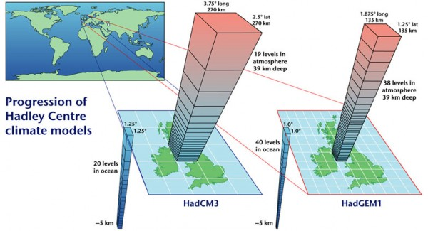

Models in physical geography
GEG266 - Approaches to physical geography
Tadas Nikonovas, November 2019, tadas.nikonovas@swansea.ac.uk
models in physical geography
- What is a model?
- The development of model
- Different types of models
- Modelling uncertainties
- Uses and limitations
what is a model?
What is a model?

a model is a small-scale simplified version of reality
what is a model?
A set of equations expressing the laws that govern the evolution of the system
Why use a model?
- To understand system behaviour
- Prediction
- Sensitivity analysis
Why use a model?
Types of model
Conceptual - Empirical - Physical
Conceptual model
An outline of how system works
conceptual model

conceptual model

conceptual model
Empirical model
Model based on observations or experiments
Empirical model

Empirical model

Physical model
Physical model
Based on first principles - storage, transfer, mass conservation...
Physical model
Uses equations believed to represent the physical/chemical/biological process governing the system
Physical model examples
- Ice sheet modelling
- Ocean circulation
- Weather prediction
- Climate modelling
- Pollution transport
Empirical vs Physical
- Based on observations
- Statistical, "black box"
- Works on anything, but often humans, biology, complex stuff
- Easy to tweak
- Based on first principles
- Unambiguous
- Physics, chemistry...
- Either works or it doesn't
The modelling process
problem - conceptual model - mathematical model - computer code - application
Numerical modelling
Lewis F. Richardson "Grand forecast factory"

21st century
How models are implemented?
A computer program is just a list of instructions
heat_absorbed = (1 - albedo) * solar_radiation
temperature += heat_absorbed
if temperature > 0:
do_rainfal()
else:
do_snowfall()
grids and timesteps

grids and timesteps

grids and timesteps

grids and timesteps

Improvements in climate models
scientific models at best are approximations of the objects and systems that they represent—they are not exact replicas
All models are wrong, but some are useful
- George Box
This map is wrong
This map is wrong but useful
Models are like maps of processes
Modelling uncertainties
The machine is wrong and/or the theory is wrong
Numerical precision
1/3 = 0.3333333333333333333333333333...
Initial conditions
Initial conditions
Model resolution
Modelling uncertainties
The machine is wrong and/or the theory is wrong
Theoretical uncertainties
structural - process - parameter uncertainties
Structural uncertainty
Process uncertainty
How does glacier calving work?

Parameter uncertainty
How much do cloud droplets vary in size?
Modelling uncertainties
Modelling uncertainties
Verification and validation
- Does the model match the theory?
- Does the theory match reality?
- Model inter-comparison
- Compare with observations
- How close is close enough?
Verification and validation
Summary
Uses
- Models allow to understand complex systems
- Sensitivity testing
- Prediction
limitations
- Are only approximation of reality
- Depend on quality of inputs
- Can be "black box" predictors
- Results may match reality but for wrong reasons
a model is a simplified version of reality
All models are wrong, but some are useful
Emphasis is on probability modelling and visualization
Further reading
- Holden J. (2017) An Introduction to Physical Geography and the Environment. Pearson, Harlow. Pp. 19 – 22 Download models for excel
- Clifford N.J. and Valentine G. (2007) Key methods in geography. Sage Publications. Chapter 17
- http://blogs.plos.org/models/ - Climate modelling blog
- http://www.ipcc.ch/pdf/technical-papers/paper-II-en.pdf An intro to climate models used in the IPCC 2nd assessment report [old (1997), but good]
- McGuffie & Henderson-Sellers, The Climate Modelling Primer - How to build a climate model